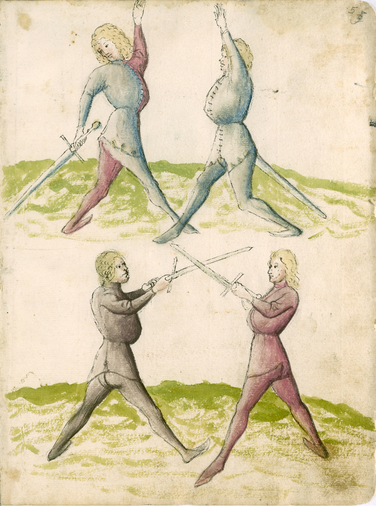

Historical Resources
Introduction
Belegarth may be a simulation of sword fighting, but you can’t just pick up any old training manual and instantly become a master at what is essentially a modern sport. In fact, the martial art most similar to Belegarth isn’t even sword fighting! Eskrima, a system of stick fighting, translates well to Belegarth. All historical resources and real-world disciplines must be taken with a grain of salt, but there is technique and wisdom to be found among old writings.
Training Manuals
HEMA has a collection of Treatises. Look out for the writers Johannes Liechtenauer, Hans Talhoffer, Paulus Hector Mair, and Sigmund Ringeck.
Think Like a Warrior
A strategic mind is just as important as technique on the battlefield. The Art of War by Sun Tzu and The Book of Five Rings by Miyamoto Musashi both teach you to think about your relationship with your enemy, and more importantly your relationship with yourself. The Principals of War from the book On War by Carl Von Clausewitz are used by the Army today.